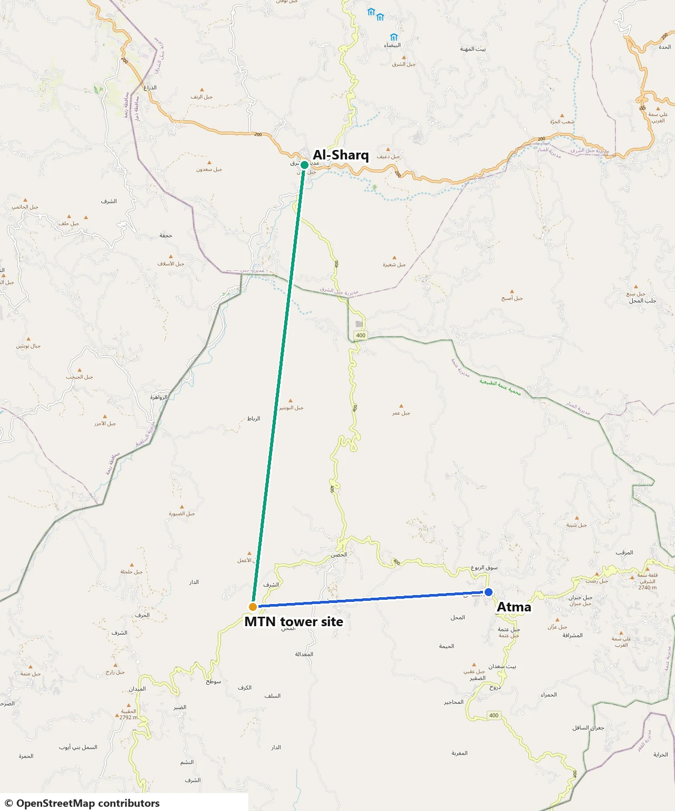
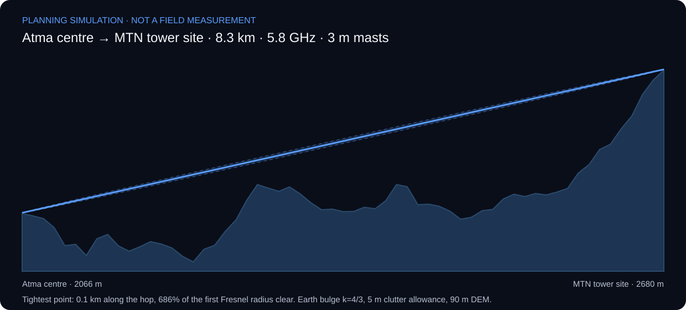
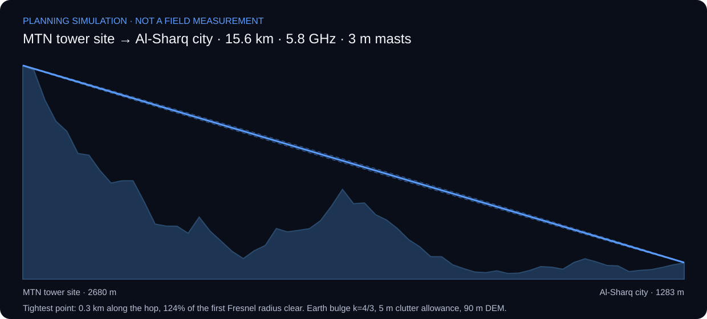
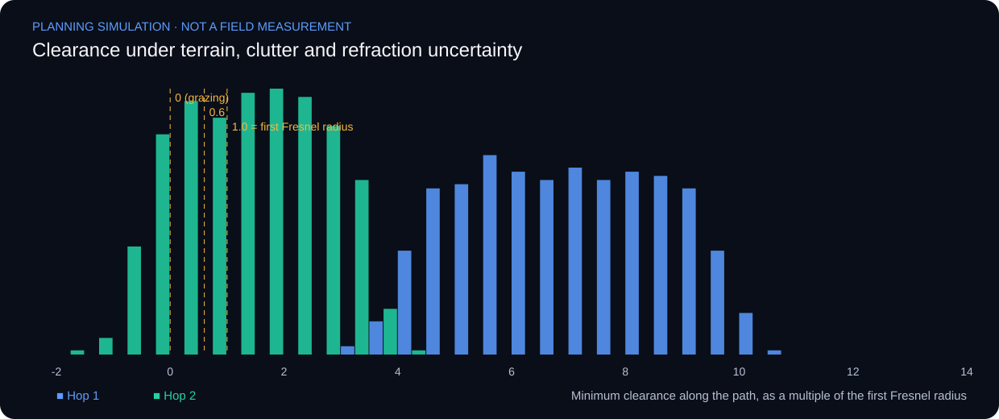
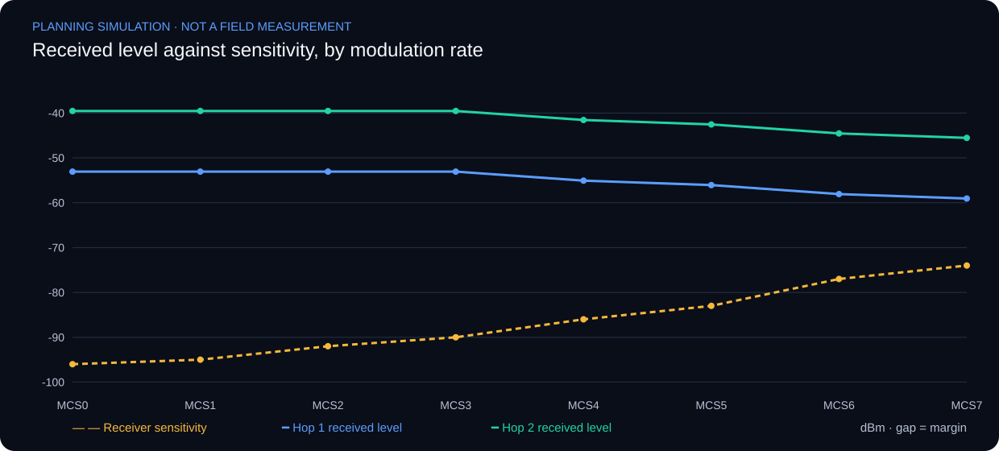
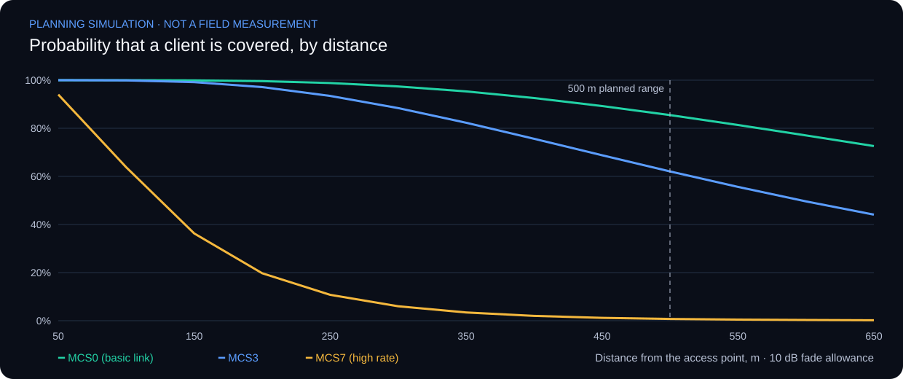
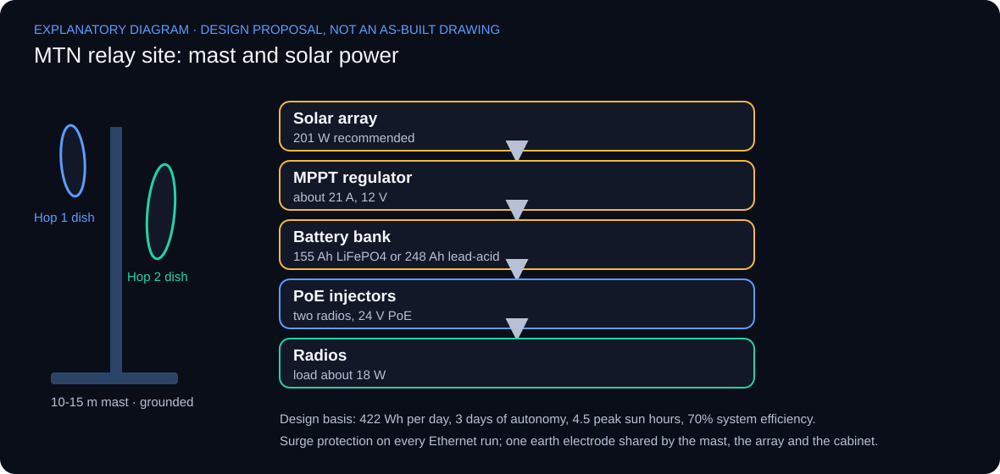

Network Engineering · RF Planning
Wireless Link Planning & RF Engineering
Planned wireless coverage and point-to-point links end to end on Ubiquiti equipment, with VB.NET calculators for Fresnel-zone clearance and RF link budget.
Implemented Project
Overview
Implementation scope
A wireless link is only as good as its weakest planning assumption. This study treats coverage, path geometry and radio budget as one engineering workflow: where service is needed, whether the path between sites stays clear, and whether the receiver is left with usable margin. Wireless coverage and point-to-point planning were carried out on Ubiquiti equipment, supported by two VB.NET engineering calculators for Fresnel-zone clearance and RF link budget.
The three parts were originally documented separately. They are presented together here because a real link decision needs all of them: a good link budget cannot rescue an obstructed path, and a clear path does not prove there is enough signal at the receiver. Each part below states its inputs, its method and the evidence a reviewer should expect to inspect.
Planning workflow
Each question is answered with its own method, then recorded in a single link decision record. Prediction and measurement are kept apart throughout: a model result is never presented as a field measurement.

| Stage | Question | Method and tool | Evidence to inspect |
|---|---|---|---|
| 1 · Coverage | Where can clients keep the required radio service? | Coverage modelling and site planning on Ubiquiti equipment | Radio and geometry assumptions attached to each coverage view |
| 2 · Path clearance | Does the point-to-point path stay clear of obstructions? | Line-of-sight and Fresnel-zone planning tool (VB.NET) | Terrain profile, obstacle heights and the clearance criterion applied |
| 3 · Link budget | Is there enough margin at the receiver? | RF link-budget and propagation engine (VB.NET) | Input units, propagation model, margin against sensitivity |
| 4 · Capacity | Can the link carry the offered traffic? | Separate review of radio rate and payload throughput | Direction, offered load and test duration |
1 · Coverage and point-to-point site planning
Wireless coverage and point-to-point connectivity were modelled together, considering antenna alignment, capacity requirements and site coverage. Coverage describes where access is available; point-to-point planning describes the transport between sites. Antenna placement and alignment influence both the proposed link and its installation.

Coverage asks where a client can maintain the required radio service. Backhaul asks whether the path between fixed endpoints has adequate propagation and clearance. Capacity asks whether the radio and network can deliver the required traffic under the defined load. Treating these as separate review paths keeps a nominally covered area from being presented as guaranteed throughput.
A planning record needs the radio settings, antenna pattern, installation geometry and environmental assumptions associated with its prediction. Alignment should be reviewed against the intended endpoint and polarisation before optimising observed signal. No frequencies or sector counts are reconstructed from the low-resolution preview.

| Review area | Method | Evidence to inspect |
|---|---|---|
| Coverage prediction | State radio and geometry assumptions | Model context attached to its coverage view |
| Path alignment | Check endpoint direction and polarisation | Alignment record linked to link quality |
| Capacity | Separate negotiated rate from payload throughput | Direction, load and test duration recorded |
| Field review | Associate observations with locations and conditions | Measured points separated from predictions |
2 · Line of sight and Fresnel-zone clearance
A point-to-point link needs more than a visible sight line. The planning tool addresses line-of-sight and Fresnel-zone clearance: the link budget evaluates power, while the path profile evaluates geometry and obstruction.

The first Fresnel radius varies along the path. With wavelength λ and distances d1 and d2 from the inspected point to the endpoints, r1 = sqrt(λ d1 d2 / (d1 + d2)), using metres consistently. The maximum radius occurs at the midpoint for a level path, but the critical clearance point can lie elsewhere where terrain or an obstacle rises.
λ = c / f
r1 = sqrt(λ × d1 × d2 / (d1 + d2))
LOS(x) = Ht + (Hr − Ht) × x / D
Earth bulge(x) ≈ x × (D − x) / (2 × k × RE)
Clearance = LOS − terrain − obstacle − Earth bulge
All lengths use metres and frequency uses Hz. A 60% first-zone clearance is an initial planning target, subject to the path, refraction and availability assumptions; it is not a guarantee of link performance. ITU-R P.530 considers climate, effective Earth radius, diffraction and availability requirements when specifying clearance. Avoid applying the curvature correction twice.
A complete review combines endpoint elevations and antenna heights with a terrain profile, obstacle heights and the selected refraction assumptions. Straight-line visibility alone can conceal Fresnel obstruction. Any recommended mast height must identify its survey inputs; the available material does not support a site-specific height recommendation.

| Review area | Method | Evidence to inspect |
|---|---|---|
| Midpoint check | Evaluate equal endpoint distances | Maximum r1 for the same unobstructed path |
| Frequency scaling | Increase frequency by a factor of four | Radius becomes half |
| Off-centre obstacle | Evaluate its actual d1 and d2 | Local radius used, not midpoint radius |
| Site acceptance | Review terrain and effective-radius assumptions | Documented profile and applicable clearance criterion |
3 · RF link budget and propagation analysis
The VB.NET engineering calculator addresses path loss, receiver sensitivity, thermal noise and link-budget calculations. A walkthrough must expose input units and assumptions as well as the output, so a reviewer can recompute a result without access to the original source code.

The interface takes frequency, distance, antenna heights, transmit power, antenna gains, cable and polarisation losses, system margin, terrain and the effective-Earth factor, and groups results into path loss, Fresnel clearance, link budget, receiver sensitivity and a received-power chart.
FSPL (dB) = 32.44 + 20 log10(f in MHz) + 20 log10(d in km)
EIRP (dBm) = Pt + Gt − Lt
Pr (dBm) = Pt + Gt + Gr − Lt − Lr − Lpath − Lother
Available margin (dB) = Pr − receiver sensitivity
Noise at ~290 K (dBm) ≈ −174 + 10 log10(B in Hz) + NF
Gains are dBi; losses and margins are dB; absolute powers and sensitivity are dBm. Free-space path loss is only one part of the propagation model: obstacles, diffraction, atmospheric effects and interference can change a field link, so a positive calculated margin is not a recorded availability or throughput result. The receiver threshold depends on bandwidth, modulation and required quality, so datasheet sensitivity is kept distinct from a sensitivity calculated from noise and required SNR.
Recalculation of the displayed example
For 5800 MHz and 5.02 km, with 20 dBm transmit power, 15 dBi gain at each end and 1 dB cable loss at each end, assuming free-space propagation and no other losses:
| Quantity | Poster | Recalculated |
|---|---|---|
| EIRP | 34 dBm | 34 dBm |
| FSPL | 120.535 dB | 121.72 dB |
| Received power | −72.535 dBm | −73.72 dBm |
| Margin above −85 dBm sensitivity | About 12.46 dB | 11.28 dB |
| Remainder after 10 dB target | Not separately defined | 1.28 dB |
The displayed received power agrees with the displayed loss, but that loss does not agree with the visible frequency and distance. This is a discrepancy in the poster; without application source it does not identify the cause or prove a software defect. The original image is preserved as source evidence. At 20 MHz bandwidth and 5 dB noise figure, equivalent receiver noise is approximately −95.99 dBm; the poster’s roughly −101 dBm corresponds to thermal noise before adding noise figure, so the two quantities are labelled separately.

| Review area | Method | Evidence to inspect |
|---|---|---|
| Unit conversion | Enter equivalent GHz and MHz representations | Same FSPL after explicit conversion |
| Distance scaling | Double distance in free space | FSPL increases by about 6.02 dB |
| Additional loss | Add 3 dB cable loss | Received power and margin drop by 3 dB |
| Invalid input | Zero or negative frequency or distance | Reject before logarithmic calculation |
Putting it together: one link, three checks
The same illustrative path is carried through all three stages to show how the checks combine into a decision. The values are independently computed example inputs, not recovered deployment parameters.
| Stage | Calculation | Result | Reading |
|---|---|---|---|
| Path clearance | λ ≈ 0.060 m; r1 at midpoint | ≈ 5.48 m (60% ≈ 3.29 m) | Terrain and obstacles must stay below the line of sight by at least the clearance target |
| Path loss | 32.44 + 20 log10(5000) + 20 log10(2) | ≈ 112.44 dB | Free-space loss only; other losses added separately |
| Received power | 20 dBm + 20 dBi + 20 dBi − 2 dB − 112.44 dB | ≈ −54.44 dBm | Nominal level at the receiver input |
| Margin | −54.44 dBm − (−75 dBm sensitivity) | ≈ 20.56 dB | Compared with the required fade margin, not treated as availability |
A passing link budget does not remove a clearance deficit, and a clear path does not prove margin. The decision record therefore lists all three results with their assumptions, then hands over to alignment and field validation, where measured values are recorded separately from these predictions.
Case: bringing internet from Atma to Al-Sharq, Dhamar
What is documented and what is simulated
The equipment, distances, distribution plan and costs come from the author’s own planning document for this network. Everything labelled simulated is a planning-level engineering analysis run on public elevation data, manufacturer-reported radio figures and stated assumptions. It is not as-built evidence: no measured signal level, throughput or uptime is included. The last subsection turns the predictions into field acceptance criteria.
Backhaul design: two hops through the MTN tower site
Atma and Al-Sharq are separated by mountains, so the plan does not attempt one long link. It uses two hops through the elevated MTN tower area, with a different radio class on each hop. Link planning used the Ubiquiti airLink tool.
| Hop | Estimated distance | Equipment | Quantity and cost |
|---|---|---|---|
| Atma city centre → MTN tower area | 8.5 km | PowerBeam M5 400 | One link, $180 |
| MTN tower area → Al-Sharq city | 16.5 km | Rocket Dish M5, 34 dBi | One link, $1,200 |
The route on the ground
The images below show the real terrain along the route, rendered from public elevation data and OpenStreetMap. They are not photographs of the installation. The mountain-top relay is the highest point of the route and Al-Sharq lies far below it.



Method and inputs
- Terrain: 61 elevation samples per hop from the public Copernicus 90 m model. Site coordinates are approximate to about 1 km in the repository and are not survey positions; the map images show positions only at map scale.
- Radio figures: manufacturer-reported values for the named equipment, from the Ubiquiti TechSpecs pages for the PowerBeam M5 400, the RocketDish and the NanoStation M2, and the Rocket M datasheet: 25 dBi and up to 26 dBm for the PowerBeam, 34 dBi with a beamwidth near 3° for the dish, up to 27 dBm for the Rocket M5, and sensitivity from −96 dBm (MCS0) to −74 dBm (MCS7), each with a ±2 dB tolerance. Transmit power falls at the higher rates, and the model follows that.
- Assumptions, not recovered settings: 5.8 GHz, a 20 MHz channel, 2×2 operation with 50% protocol efficiency, 0.5 dB cable loss per end, 2 dB other losses, a 10 dB fade allowance, and a 5 m allowance for trees and buildings.
- Propagation: the ITU-R P.530 multipath model and the ITU-R P.838 and P.530 rain model, with an assumed refractivity gradient and a 40 mm/h rain rate exceeded 0.01% of the time. These climate inputs were not verified for the region.
- Uncertainty: 5,000 Monte Carlo runs per hop varying terrain-model error (a 6 m smooth component and 4 m noise), clutter up to 15 m, and the effective-Earth factor.
Terrain and clearance (simulated)
| Item | Hop 1: Atma → MTN site | Hop 2: MTN site → Al-Sharq |
|---|---|---|
| Computed path length | 8.3 km | 15.6 km |
| Ground elevation, start / end | 2066 m / 2680 m | 2680 m / 1283 m |
| Vertical angle along the path | about +4.2° (uphill) | about −5.1° (downhill) |
| Mast height for 60% / 100% Fresnel clearance | 0 m / 0 m | 1 m / 3 m |
| Clearance at k = 4/3, as a multiple of the first Fresnel radius | 8.0 | 2.1 |
| Clearance at k = 2/3 (sub-refractive atmosphere) | 8.0 | 2.0 |
The tower site stands about 600 m above Atma and about 1,400 m above Al-Sharq. Both hops therefore clear the intervening ridges on the nominal terrain, and the relay site works as a mountain-top hub.


Clearance under uncertainty (Monte Carlo)
A single profile hides how much the answer depends on terrain-model error and refraction. Repeating the clearance calculation 5,000 times per hop gives the probability that the link keeps at least 60% of the first Fresnel radius, and the probability that the sight line is simply free.
| Mast height | Hop 1: ≥ 60% Fresnel | Hop 2: ≥ 60% Fresnel | Hop 2: sight line free |
|---|---|---|---|
| 3 m | 100% | 49% | 64% |
| 6 m | 100% | 69% | 83% |
| 10 m | 100% | 94% | 99% |
| 15 m | 100% | 100% | 100% |
| 20 m | 100% | 100% | 100% |

Hop 1 is robust at any mast height. Hop 2 is the critical hop: every failing run occurs within 1 km of one of its two sites, where the Fresnel radius is small and a few metres of terrain error, a tree or a building decide the result. That points to a practical action rather than a larger dish: raise the masts to 10–15 m on that hop and check the first kilometre at each end on site.
Link margin by modulation rate (simulated)
| Quantity | Hop 1 (8.3 km) | Hop 2 (15.6 km) |
|---|---|---|
| Free-space path loss | 126.1 dB | 131.5 dB |
| Received level at MCS0 / MCS5 / MCS7 | −53.1 / −56.1 / −59.1 dBm | −39.5 / −42.5 / −45.5 dBm |
| Margin above sensitivity at MCS0 / MCS5 / MCS7 | 42.9 / 26.9 / 14.9 dB | 56.5 / 40.5 / 28.5 dB |
| Highest rate with a 10 dB fade allowance | MCS7 | MCS7 |

Both hops can hold the highest single-stream rate with margin to spare. Hop 1 has the tighter margin at the top rate, because it uses the smaller dish. Equipment tolerances of ±2 dB and unmodelled interference are not included.
Propagation reliability (simulated)
| Event | Hop 1 | Hop 2 |
|---|---|---|
| Fade that drops the link below MCS7 | 14.9 dB | 28.5 dB |
| Multipath time at that fade depth | about 0.012 minutes per year | about 0.015 minutes per year |
| Rain fade exceeding that depth | not reached above 0.001% of the time | not reached above 0.001% of the time |
| Fade that loses the link entirely (MCS0) | 42.9 dB, negligible time | 56.5 dB, negligible time |
Steep, high-altitude paths with large margins produce very little multipath, and 5.8 GHz is only mildly affected by rain. Propagation is therefore not the main reliability risk. The risks that decide real availability are power at the relay site (the plan lists solar panels, batteries and a regulator), alignment drift in wind, lightning, interference in the 5 GHz band, and equipment faults.
Antenna alignment (simulated)
| Item | Hop 1 (PowerBeam) | Hop 2 (34 dBi dish) |
|---|---|---|
| Beamwidth (estimated from gain) | about 9° | about 3° |
| Required vertical tilt | about +4.2° | about −5.1° |
| Pointing error giving 1 dB loss | about ±2.7° | about ±1.0° |
| Pointing error giving 3 dB loss | about ±4.6° | about ±1.6° |
On hop 2 the dish must be tilted down by more than one and a half beamwidths and aimed to within about one degree. Alignment should use received-level feedback during installation and be re-checked after the first strong winds.
Capacity (simulated)
At the top single-stream rate with two spatial streams on a 20 MHz channel, the radio rate is about 130 Mbps and the expected application throughput about 65 Mbps, assuming 50% protocol efficiency. This is an assumption-based estimate: it requires the two polarisations to carry independent streams and a clean channel, and a wider channel would roughly double it. The backhaul as a whole is limited to the slower hop, so both hops give about the same ceiling. The ceiling is shared by every user in Al-Sharq.
Distribution plan inside Al-Sharq
The distribution plan divides the city into numbered zones on an aerial map, with point-to-point distances of roughly 45 to 150 m between points. Seven zones are planned, each with an estimated broadcast range of 500 m. The equipment listed per zone is:
| Zone | Equipment listed | Cost |
|---|---|---|
| 1 | 2 × NanoStation M2 11 dBi and 1 × 15 dBi 120° M5 sector | $430 |
| 4, 6, 12, 14 | 1 × PowerBeam M5 400 and 2 × NanoStation M2 11 dBi, per zone | $250 each |
| 10, 13 | 1 × PowerBeam M5 400 and 3 × NanoStation M2 11 dBi, per zone | $330 each |

The core and distribution list includes a MikroTik RB AH 1100 for distribution ($350), an RB 750 for combining lines ($70), Netgear modems per internet line ($45 each), network cables, access points, switches, mounts, waterproofing and RJ45 connectors. The remote site list also names solar panels, batteries, a charge regulator and panel mounts. Prices are in US dollars and local currency; quantities for some power items are not stated. The listed radio equipment totals about $3,890: backhaul $1,380, zone equipment $2,090 and core routers $420. This is the planned budget, not a final as-built cost.
Coverage reliability of an access cell (simulated)
A 2.4 GHz NanoStation access point serving 11 dBi client antennas was modelled with a path-loss exponent of 3.2 for a dense town and 8 dB of log-normal shadowing. The curves give the probability that a client location keeps the stated rate with a 10 dB fade allowance. Co-channel interference between cells is not modelled.
| Distance from the access point | MCS0 (basic link) | MCS3 | MCS7 (high rate) |
|---|---|---|---|
| 100 m | 100% | 100% | 64% |
| 300 m | 97% | 88% | 6% |
| 500 m | 85% | 62% | 1% |
| 600 m | 77% | 50% | 0% |

The planned 500 m range is reasonable for basic connectivity, with 85% of locations covered, but high rates fall off quickly beyond about 100 m. That supports the plan’s division into several smaller zones with overlapping cells and directional client antennas, rather than a few large ones.
Conclusions from the analysis
- The two-hop design through the elevated MTN site is sound: both hops have large margins and negligible propagation outage on paper.
- Hop 2 is the one to protect. Its clearance risk sits within 1 km of its two sites, so use 10–15 m masts and verify the first kilometre at each end.
- Alignment on the 34 dBi dish is demanding: tilt near −5° and aim to about one degree.
- Real availability will be set by relay-site power, lightning protection, wind and interference rather than by propagation.
- Distribution capacity and coverage, not the backhaul, are the likely limits for users in Al-Sharq.
Recommended configuration (design proposal)
These settings follow from the simulation and from common practice for this class of equipment. They are proposals for commissioning, not the settings recorded in the deployment. Regulatory limits on channels and radiated power differ by country and must be checked before use.
| Setting | Recommendation | Reason |
|---|---|---|
| Channel plan | Run a spectrum scan at each end and choose the quietest 5 GHz channels. Use channels at least 60 MHz apart for the two hops. | Both hops end on the same mast at the relay site, so adjacent channels would interfere with each other. |
| Channel width | 20 MHz at commissioning. Move to 40 MHz only if the scan is clean and the measured margin allows it. | A wider channel roughly doubles capacity but costs about 3 dB of sensitivity and picks up more interference. |
| Transmit power, hop 1 | Start at the maximum and trim to keep the planned rate with at least 10 dB of margin. | The predicted margin at the top rate is 14.9 dB, so there is little room to reduce power. |
| Transmit power, hop 2 | Reduce by about 10 dB from the maximum. | The predicted received level is very high. A 10 dB cut still leaves about 18 dB of margin at the top rate and lowers interference and radiated power. |
| Antenna placement at the relay | Separate the two dishes vertically by at least 2 m and keep them cross-polarised. | Reduces coupling between the two radios on one mast. |
| Link mode | Point-to-point bridge pair with the vendor’s TDMA scheduling enabled. | Avoids contention on a fixed link and gives predictable latency. |
| Management | Change default credentials, allow only encrypted management on a separate VLAN, keep identical firmware at both ends. | Basic security and easier fault finding. |
| Monitoring | Log received level, noise, rate and uptime for both hops with SNMP. | Provides the evidence needed for the acceptance table. |
| Area | Recommendation |
|---|---|
| VLANs | Separate management, transport and subscriber traffic. Keep radio management off the subscriber network. |
| Core router (RB AH 1100) | Routing, DHCP, firewall and per-subscriber bandwidth queues. Block management services on the subscriber side. |
| Combining internet lines (RB 750) | Combine the lines with health checks, so that traffic shifts when one line fails. |
| Access cells (NanoStation M2) | Use non-overlapping 2.4 GHz channels (1, 6 and 11) across neighbouring zones, 20 MHz wide, with client isolation enabled. |
| Cell power | Trim each cell’s transmit power to just cover its zone, to limit co-channel interference between zones. |
| Client antennas | Use directional client units aimed at the nearest access point, as the coverage curves assume. |
| Quality of service | Give priority to name lookups and voice traffic on the shared backhaul. |
| Backups | Export the configuration of every device after commissioning and after each change. |
Relay site power and installation (design proposal)
The MTN relay runs two radios, about 18 W including injector losses, which is about 420 Wh per day. For three days of autonomy and 4.5 peak sun hours, the calculation gives the sizing below. The result is a starting point and should be revised with the measured load and the real insolation at the site.
| Component | Sizing | Basis |
|---|---|---|
| Solar array | at least 134 W, recommended about 200 W (for example 2 × 100 W) | 422 Wh per day, 4.5 peak sun hours, 70% system efficiency, 1.5 margin |
| Battery bank, 12 V | about 155 Ah lithium iron phosphate, or about 250 Ah lead-acid | 3 days of autonomy, 80% and 50% usable depth of discharge |
| Charge regulator | MPPT, 25 to 30 A | About 21 A from the array, with margin |

- Mast heights: 10 to 15 m at both ends of hop 2 and about 6 m on hop 1, with the first kilometre around each hop 2 site checked for trees and buildings.
- Alignment: coarse aiming with a compass and the airLink plan, fine aiming on received level, then lock the mounts. Re-check after the first strong winds.
- Weather and lightning: shielded outdoor cable, drip loops, sealed connectors, a surge protector at each end of every outdoor Ethernet run, and one earth electrode shared by the mast, the array and the cabinet.
- Safety: plan work at height and avoid climbing during storms.
Field acceptance criteria
These criteria turn each prediction into a check an installer can run. The measured column stays empty until real readings exist.
| Check | Predicted | Pass criterion | Measured |
|---|---|---|---|
| Hop 1 received level | −53 to −59 dBm | Within about 5 dB of prediction | Pending |
| Hop 2 received level | −40 to −46 dBm | Within about 5 dB of prediction | Pending |
| Hop 2 dish alignment | Tilt about −5°, error within 1° | Peak received level at the final position | Pending |
| Throughput per hop, both directions | About 65 Mbps at 20 MHz (assumption) | Sustained iperf3 result recorded with channel width and load | Pending |
| Channel quality | No co-channel signal within 10 dB of the link | Spectrum scan saved for each end | Pending |
| Near-site obstructions on hop 2 | Clear within the first 1 km | Site photographs and a mast height of at least 10 m | Pending |
| Stability | Planned rate held | Seven-day log with the rate and received level recorded | Pending |
The script, terrain profiles and numeric results are in the repository: docs/simulations/atma-al-sharq.
Engineering approach
- Separate coverage, path clearance, link budget and capacity, then combine them in one decision record.
- Expose input units and assumptions with every calculated result so it can be recomputed independently.
- Treat standards such as ITU-R P.530 as design context that does not replace a radio data sheet or site survey.
- Keep predictions, calculator outputs and field measurements clearly distinguished.
The two VB.NET calculators support analysis and are distinct from the Ubiquiti wireless network work, which documents the planning deliverable.
Verification context
The functional diagrams explain the engineering responsibilities of each part. The original source previews appear above. As-built addressing, configuration exports and raw acceptance records are not included in the public release. No new coverage heatmap, site coordinates, survey data or throughput measurement is fabricated.
Detailed verification boundaries and technical source context